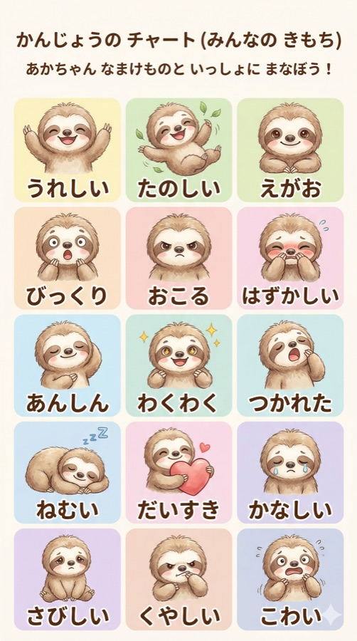
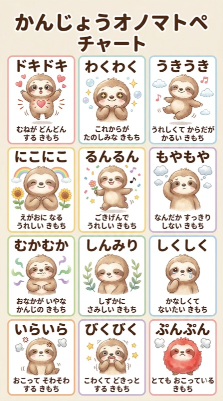
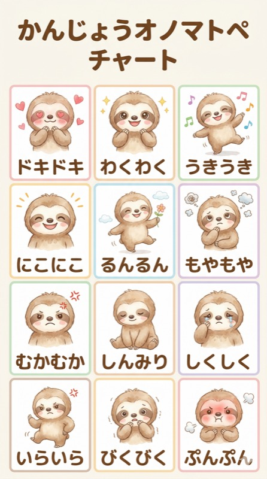

🦥
いっしょに
読
よ
もう！
📖
読
よ
んだ
本
ほん
の 気もちシート
名前
なまえ
：_______________
日
ひ
づけ：_______________
📚
読
よ
んだ
本
ほん
のタイトル
作
さく
しゃ
読
よ
んだページ
👥
お
話
はなし
に
出
で
てきたのは だれ？
あてはまるものを タップしてね
🧒
子
こ
ども
🧑
大人
おとな
👴 おじいさん・おばあさん
🐶 いぬ・ねこ
🐻 どうぶつ
🧚 ようせい・まほうつかい
だれのことが
一番
いちばん
すきだった？
💭
気もちの へんか
タグをタッチ or
自分
じぶん
のことばで
書
か
いてね
🌱
はじめは
→
🌿
とちゅうは
→
🌸
さいごは
🗂️ 気もちチャートを見る
❤️
この
本
ほん
のすきなところ
🪞
自分
じぶん
だったら どうする？どうおもう？
キャラクターと
自分
じぶん
をくらべてみよう
⭐
おすすめ度は？
★
★
★
★
★
タップして えらんでね
つぎに
読
よ
みたい
人
ひと
へ ひとこと
🦥
気もちに きづいてくれて ありがとう。
気もちを ことばにできると、
心
こころ
が すっきりするよ。
— こころん 🌿
🖨️ このシートをいんさつする
🦥 気もちチャート
✕
😊 気もちことば
💬 オノマトペ①
💬 オノマトペ②


